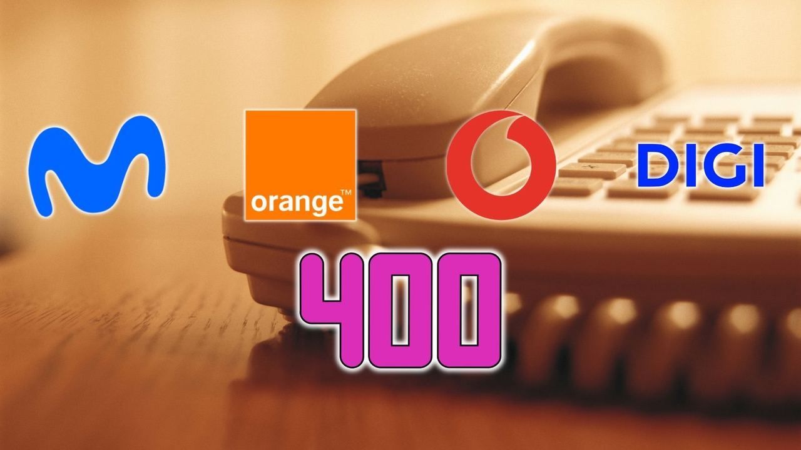

Vodafone Group · 16. Oktober 2026
Spanische Telekommunikationsanbieter nutzen neue 400er Vorwahlen für Werbeanrufe

Auf Anordnung der iberischen Regulierungsbehörde CNMC müssen kommerzielle Anrufe ab dem 17. Oktober 2026 spezielle Rufnummern nutzen, die mit 400 beginnen, wovon Vodafone 15 Nummernblöcke zugeteilt wurden.